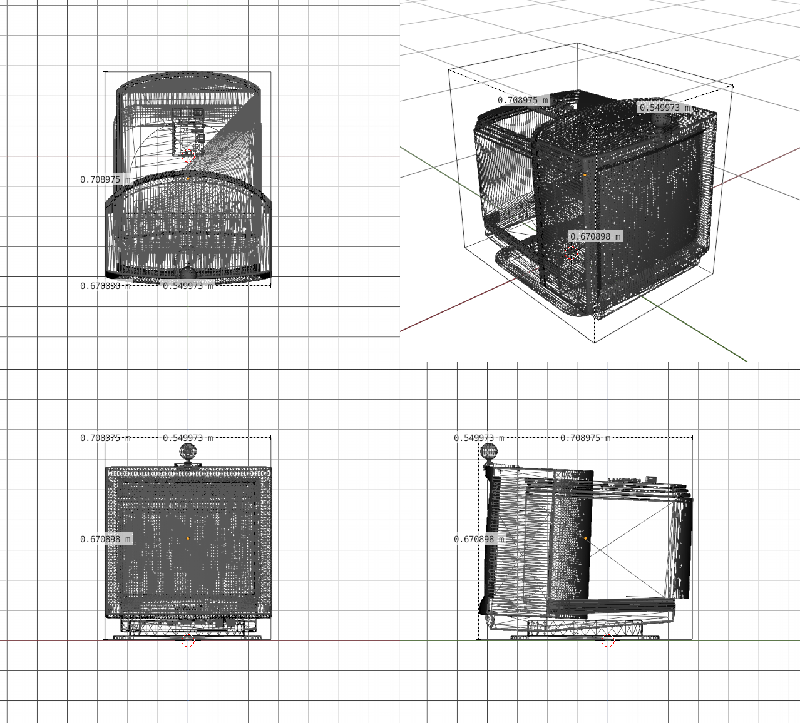

First Contact
An interactive installation questioning our interpretation of exotic consciousness
Mixed media, AI, generative art
By Nino Filiu
First contact with alien civilizations, conversation with artificial intelligences, abstract art contemplation: these are all forms of esoteric communication with an entity supposedly conscious that interacts with intent. But what if the impression of consciousness and intent doesn't emerge from the entity we're communicating with, but rather from within ourselves?
On August 6, 1967, astrophysicist Jocelyn Bell Burnell picked up a radio signal that science couldn't yet explain. The code name for the signal was LGM-1, standing for "little green men 1", because even for some top scientists, only intelligent extraterrestrial life could explain the phenomenon. It seems as if we can't help but believe that there always must be something conscious behind unexplained signals, whether they come from a distant star, a machine, or the depths of the ocean. That is based on this observation that First Contact makes sense.
First Contact is an installation where a stream of abstract visuals appears on a screen in front of the spectator, whose face expression and hand positions are being detected and fed into a program that makes the video evolve in real time; for example, when the spectator is first perceived, the visuals "awaken", but most interactions are less direct and based on whole entire sequences of movements, thereby creating some kind of exotic conversation between the spectator and the machine.
First Contact does not take the path of imitative AIs like ChatGPT or Blade Runner's Android, but rather something that could be called delphic AI. The goal is not to decipher and talk the language, but rather to feel the complexity of the language itself and derive from it an illusion of sentience.
The program is a web application that runs on Chromium on the Raspberry. It does face expression and hand detection from camera input thanks to AI models provided by Google's Tensorflow, then a piece of software, thereafter refered to as The Algorithm, has been written specially for the artwork that generates abstract visuals based on these perceived inputs.
All software components are products that allows the use of them in artistic endeavors, whether commercial or non-commercial.
All software components are free and open source, even The Algorithm. License details and source code links:
55cm x 65cm x 70cm approx
Installation render - the monitor is not the same model, but it basically looks like this:
